隐居、出家……近年来这些“世外生活”不知怎么就火了起来，上月，观察者网报道了广东一位企业老总舍弃百万年薪隐居终南山的新闻，引起了读者的兴趣。据不完全统计，有5000多位来自全国各地的修行者来到终南山隐居。如今，不时能听到政府高官、商界富豪、黎民百姓离开灯红酒绿的繁华都市，来到这里修行。现在连外媒也开始关注起中国的”终南山隐士“这一特殊的群体。
法新社12月16日报道了一篇原标题为《中国的高山隐士寻求通往天堂之路》的文章，文章称数千年来，佛教和道教信徒们一直到这里寻求远离浮华尘世，自上世纪80年代中国放宽宗教政策以来，隐士人数与日俱增，但随着更多人到来，山顶变得愈加拥挤。
原文如下：
他的山中小屋既无取暖设施也无电，主食是白菜。但侯大师表示，“人生在世，没有比这更快乐的生活之道了”，他安坐在简陋小屋外的木凳上如是说。近几十年的经济繁荣中，数亿中国人进城，但也有些人远离璀璨灯光和大都市，过上与世隔绝的隐士生活。他们的选择已令其浸淫于一种古老但如今正意外复苏的传统。
在位于华中的偏远的终南山上，许许多多小屋散落于参差不齐的山脊上。数千年来，佛教和道教信徒们一直到这里寻求远离浮华尘世。已来此近十年的侯说“终南山有种特殊氛围。”侯在靠近赌城澳门的繁华珠海长大，如今他的日子却几乎都在打坐中度过，偶尔停下来劈柴、切菜，“城市太喧嚣。在这里你能找到内心的快乐。现在我很享受独处。”与中国过去几十年的集体主义颂歌相比，这无异于激进的个人主义。但如今的隐士其实是沿袭了一种古老传承。即便文革期间，仍有数百名隐士未暴露踪迹。
自上世纪80年代中国放宽宗教政策以来，隐士人数与日俱增。“20年前终南山上就住着几百人。但最近几年人数增长极快”，某道教杂志创办者张建峰(音)说，“目前或许有太多人正盲目走进大山。每年都发生各种事故，有人吃了毒蘑菇或被冻死……”冬日终南山气温会下降至零下20℃，岩石下可能隐藏着毒蛇，但随着更多人到来，山顶变得愈加拥挤。
中国经济数十年的迅猛增长已催生出庞大的中产阶层，其中一些人正公开质疑物质主义价值观。今年在广州辞去高薪工作的刘景崇(音)打算彻底独居，“我觉得(城市)生活就像永无止境的圆圈，追寻更好的工作、更好的车子……但最终不知要去哪儿。”
据说半数多的终南山隐士为女性。26岁的李芸琪(音)已在这里的小屋内生活了几周。“我来这里是为寻求内心平静，逃离城市喧嚣”，说这话时，她正坐在越野车上玩弄着智能手机，沿着泥泞不堪的道路奔向山下的芸芸众生。
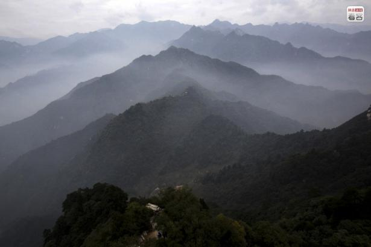终南山属秦岭山脉的一段，西起宝鸡市眉县、东至西安市蓝田县。“天下修道，终南为冠”，终南山自古以来就是著名的修道胜地，它既是佛教的策源地也是道教的发祥地，不少高僧大德，多聚于此。相传姜子牙、陶渊明、王维等历史名人都曾隐居于此。
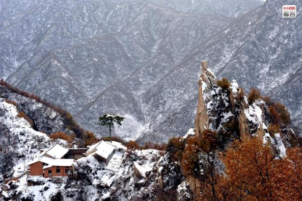终南山的主峰位于长安区境内，海拔2604米。对联：“福如东海长流水，寿比南山不老松”中的南山指的就是此山。图为2009年11月20日,终南山翠华山（终南山的一部分），一处修行人居住的屋舍（也是一座小庙）位于大山深处。终南山里隐藏着不少小庙、道观和茅棚，不少人居于其中苦修参悟。

隐居在此的多数是修行的出家人，即和尚和道士，当然也有部分没有信仰的普通人。据不完全统计，有5000多位来自全国各地的修行者隐居山谷。图为2012年2月26日，终南山大峪十里坪。一名隐士在雪地里练习“空谷传音”。
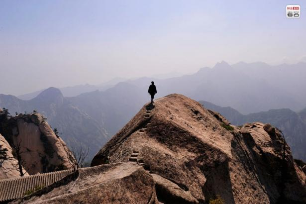在佛教和道教里，到山中修行需要经过严格的程序，道教要在师父身边待三到十年才能入山，佛教有一种说法——“不破本参不住山”，现在都市人作为田园隐居入山，也算是少数案例。图为2012年5月11日，华山南峰上，一位70多岁隐修了30多年的辛道长走在悬崖峭壁上如履平地。
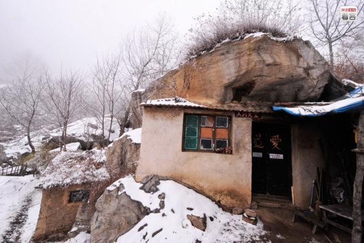隐士们大多生活在大山野岭之中，或独处一隅，或居于山巅，尽管条件艰苦，生活朴素，但不少人却认为这样可以得到所谓的“清净”。图为2012年2月26日，终南山大峪西翠花，一处隐士修行的房子就建在这个整块的石头之下。
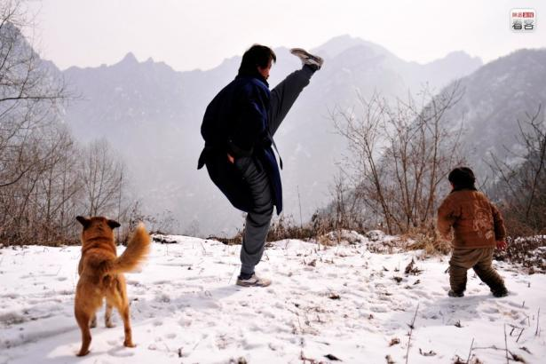在终南山里隐居的人们或居茅棚，或住庙堂，或生活在原始的天然山洞里，言语和善却又似藏玄机。图为2012年2月27日，终南山西翠花，黄道长在雪后的山上颇有兴致的练起了拳脚。
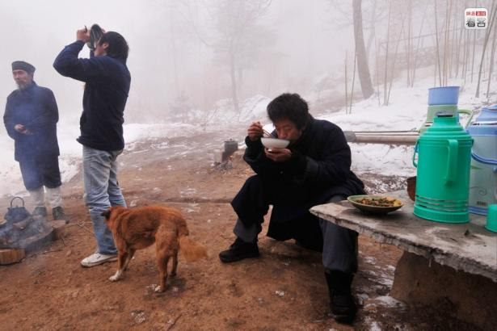一般选择隐居的普通人们有几种主要原因：一是功成名就，寻找心灵的寄托和修身养性；二是在现实生活中遭遇了挫折、困境，躲避到山间以获得暂时的清净；三是看透尘世的文人雅士，追求放归山野的人生境界。图为2012年2月27日，终南山西翠花，隐修的黄道长和几个山下来的居士一起吃饭。
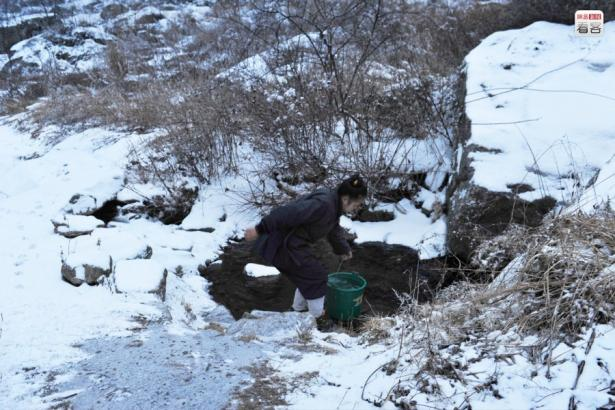山里修行者年龄小的有20几岁的少年，大的有90多岁的老者，他们大多常年居住在山上，过最简单的生活。他们自己种萝卜，土豆，白菜，吃松树的松针，松子，尝野果。图为2012年2月27日，终南山西翠花，一位从湖南来的小道姑自己提水准备做饭。
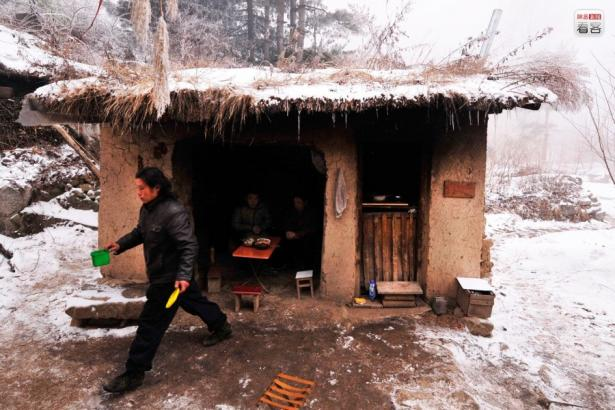在山间修行是没有早饭吃的，因为修行者一般一天只吃一餐，并且“过午不食”。晚饭时间基本以喝茶代替，没有晚饭吃。如果有人实在饿了，可以吃几片番薯干和核桃之类的食品。图为2012年2月27日，终南山西翠花，陈居士在厨房前忙活着做饭。
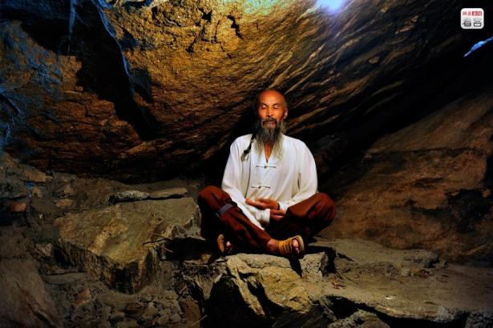2012年6月3日，大峪五里庙，海莲师傅生活在一个石洞里，洞下面与河流相通，他白天坐在一旁打坐修行，晚上睡觉则换到更高处。
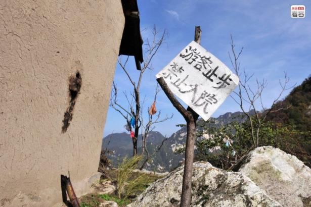因近些年不少关于终南山隐士的报道，吸引了不少人的关注。甚至有不少驴友们希望能进山寻贤问圣，大多数却无终而返。据了解，居士们远远的看到有驴友进山，“四五十人拿着大喇叭，边走边唱，带着酒肉，留下一地垃圾，然后转身就走，对山里这些修行者，他们只是好奇。”每遇到这样的到访者，隐士们只能关门谢客。图为2011年10月15日，终南山大峪，一处房屋旁挂着一张提醒游人的牌子。
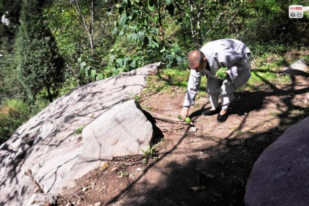释永净1971年生于福建，1999年出家，据她口述说自己谈过恋爱但并没有结婚。2010年9月从扬州空明寺来到终南山，在一处茅棚中隐修。永净说她没有什么朋友，几乎不下山，跟外界几乎不联系，也很少说话。图为2012年2月26日中午，释永净走到自己种的菜园子前摘了2根黄瓜和一些菜叶准备做饭。

隐居的生活并不是想象的那么轻松。在生活方面，他们除了能从自然中获取食物，他们生活所需的油盐、米面、衣被，则主要来自周边山民的布施，或者是山外亲朋好友、居士的供给。即使是这些，也来之不易。图为2011年10月16日，终南山嘉午台后山，一位隐修的比丘尼走出简陋的茅棚将自己的被褥拿到太阳下晾晒。
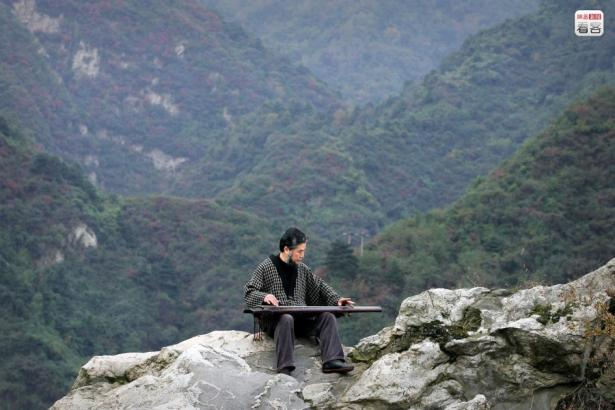2009年10月4日傍晚，翠华山天池旁，一位浓髯中年男士在弹奏着古琴曲《忆故人》，不远处站着一位女士随着琴声吟唱起陶渊明的《归去来兮辞》，一派悠然自乐之情。从附近居住者口中得知，弹琴之人叫樊洲，1992年开始在山间隐居了近20年，清晨习拳练武，下午抚琴独坐，醉心于琴拳书画。
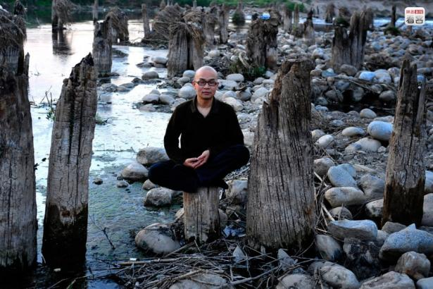2011年4月25日，终南山下，道任师傅坐在一条河流里的木桩上打坐修行。
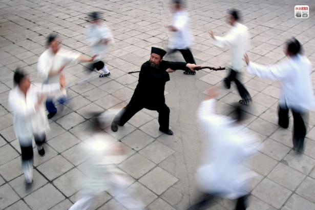2004年7月5日，西安八仙宫，道士在练“天罡八卦阵”，相传这是一种传统的武术阵法。位于陕西西安东郊的万寿八仙宫是道教全真派十方丛林，自宋代创建以来，历经数次重修和扩建。八仙宫在“文革”期间经籍大部被焚，碑石、造像也受到很大破坏，道士也纷纷出走。虽然历经磨难，文化出现断层，但终因其名声甚大，如今也吸引了不少隐士来这里修行。
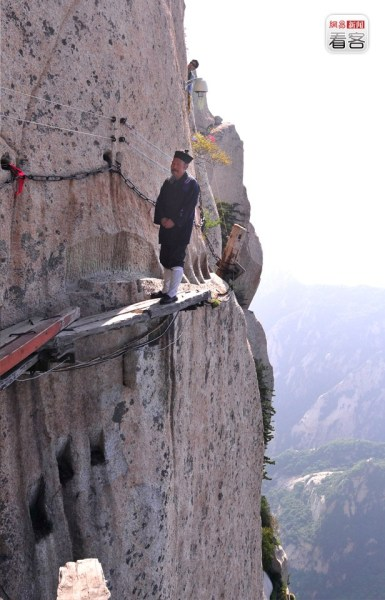一位在山里隐修多年的石匠说：“当代隐士已经远远超越了传统隐士，隐居生活是多元的，只要坚定，什么地方都可以修行，未必要在深山。”图为2012年5月11日，华山长空栈道。辛道长在悬崖边上健步如飞，不少游客到此，系着安全带也是胆战心惊。
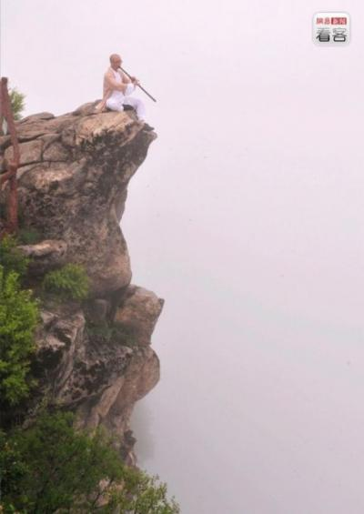近些年，由于城市污染严重，不少人们开始向往游玩并探索原生态的旅游地。终南山又因隐士存在，吸引了不少游人。而随之而来的便是专家针对终南山的旅游开发方案。最终，终南山的环境问题以及隐士们的去留，谁也无法预料。图为2012年5月8日，西安翠华山，一位名为道任的隐士在西峰上吹箫，他的前面便是万丈悬崖。
（观察者网综合环球时报、网易新闻报道）